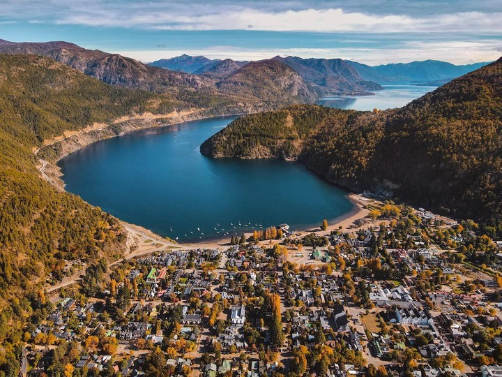

Tandil
Sierras, quesos y salames. Un escape perfecto en la provincia de Buenos Aires con paisajes increíbles.
Descargar Itinerario (PDF)
Sierras, quesos y salames. Un escape perfecto en la provincia de Buenos Aires con paisajes increíbles.
Descargar Itinerario (PDF)
La perla de la Patagonia. Rodeada de lagos cristalinos y bosques de lengas en la cordillera de los Andes.
Descargar Itinerario (PDF)
La Quebrada de Humahuaca ofrece cerros de colores vivos y una rica cultura andina en el norte del país.
Descargar Itinerario (PDF)